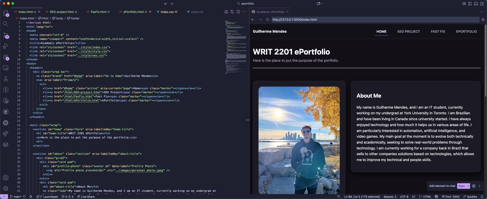

ePortfolio
Click HERE to see the repository
The ePortfolio project is the final project for the WRIT2201: Professional Writing course, where I must present the work I've done during the semester, reflections, and how I can apply it to future work. The development process involves taking information from past projects, reflecting on what was done, developing the website, and presenting all the points mentioned previously in a clean, organized, and intuitive way.
I start by taking information from previous personal progress reports to familiarize myself with what was done, what I learned during the process, and how I can apply what I learned to future work. With this, I created a draft with the general information that will be presented in my ePortfolio. With the information organized, I started developing the website HTML and CSS programming languages with the help of an AI tool presented in the Cursos IDE, and improved it with my knowledge about the languages, some internet help on the Visual Studio Code IDE. With the website completed, I improved the text and information about the projects using peer feedback and incorporated it into the final website.
My contributions
Unlike other projects presented in this ePortfolio, this one was individual. That is, everything that was written and presented on this website, from project information to the code that generates the site, was done by me, with the help of an AI platform for the website and peer feedback on the information presented on the site.
I used past projects, such as individual progress reports and early drafts, to remember how the projects were organized and how the project production processes worked. I wrote everything in a document and, with peer feedback, transformed the information present on this site.
For the website, I started working in the Cursor IDE, which has an integrated AI that helps with programming and generating code documents. With a draft generated by the AI and personal desires that I wanted the site to have, I transferred the files to Visual Studio Code and started working using my knowledge to improve what the AI had done. Thus, I added animations, color, and improved how the website would be presented, arriving at the final product that is presenting the information at the moment. I also used public animations, such as the cards containing the projects on the homepage, modifying them for my linking.
Although the website was made with the help of AI, I would like to make it clear that everything on the site was made and created by me, including projects and explanations of how each one was made.
Reflections & Applications
I believe the most important thing to take away from this project is the opportunity to look at past projects and have the ability to objectively analyze what was done, what I learned, how I can improve for the future, and how I can apply these learnings to future projects - both in the academic and professional world.
Furthermore, in my process, I use the Cursor platform for company projects. Using this tool in this project gave me the opportunity to sharpen my skills and familiarize myself with the platform. Also, since I decided to program the ePortfolio from scratch using HTML and CSS on the final website, my prior knowledge of these languages contributed greatly to the success of my project. At the same time, it was what helped me the most, and it was also the thing I found most interesting about the process. It had been years since I had done a project using these languages, and it was a good refresher of this knowledge. Strengths I learned about myself were my ability to work with deadlines and stick to a plan.
The process of developing this website taught me ways to present more complex technical information—such as explaining what the Fast Fix guide is—in a way that is accessible to people who don't have prior knowledge of the project, such as people who haven't taken the course or potential employers.